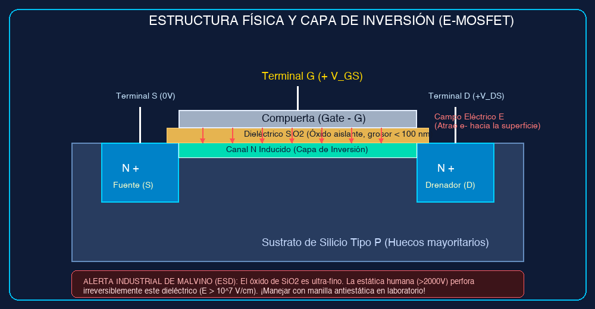
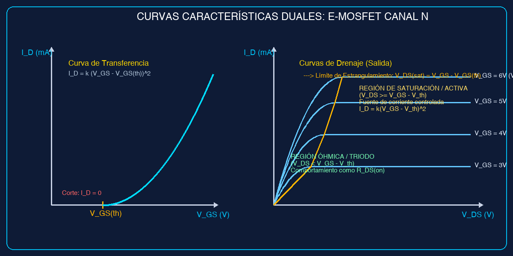
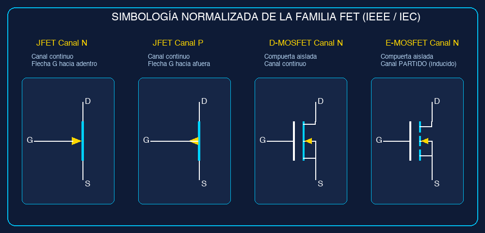
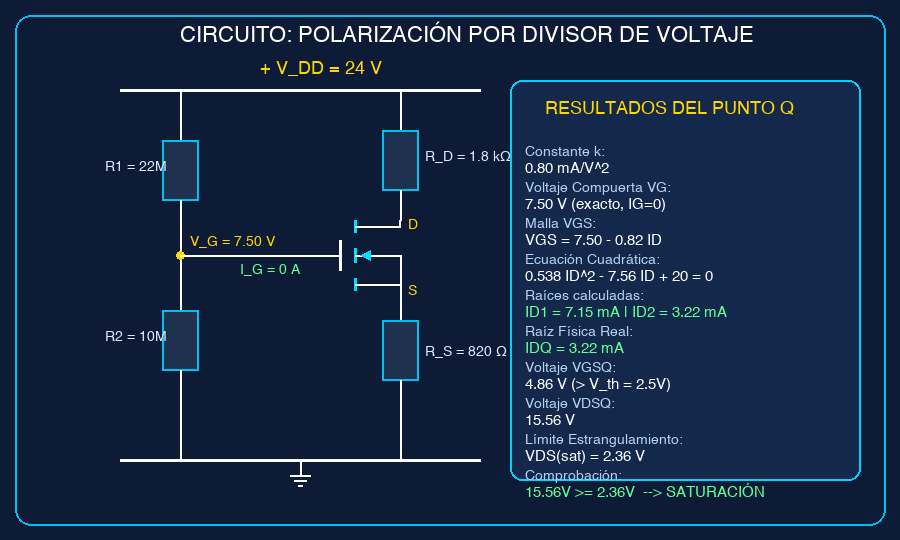
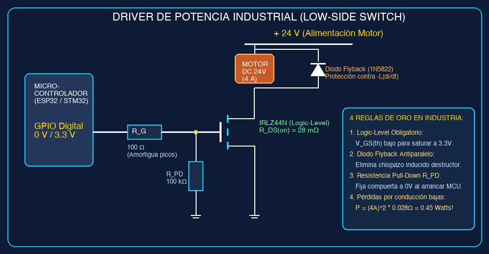

• Requiere flujo ininterrumpido de corriente de base $I_B$ para sostener la conducción.
• Impedancia de entrada: $Z_{in} \sim 1\text{ k}\Omega - 50\text{ k}\Omega$ (efecto de carga evidente).
• Analogía de Malvino: Válvula con muelle que exige fuerza continua aplicada para mantenerse abierta.
• Control electrostático puro por campo eléctrico transversal a través de la compuerta.
• Impedancia de entrada: $Z_{in} \sim 10^{12}\,\Omega - 10^{14}\,\Omega$ (aislamiento galvánico por $SiO_2$).
• Analogía de Malvino: Válvula hidráulica con émbolo electrostático: abre el paso sin consumir líquido por la llave.

1. Al aplicar $V_{GS} > 0\text{ V}$, el electrodo de compuerta repele los huecos mayoritarios del sustrato P.
2. Al superar el Voltaje Umbral ($V_{GS(th)}$), el campo eléctrico atrae electrones libres a la superficie.
3. Se forma un canal N conductor continuo que une los pozos N+ de Fuente y Drenador.
• El espesor del dieléctrico de $SiO_2$ es menor a $100\text{ nm}$.
• Una descarga electrostática humana ($> 2000\text{ V}$) produce un gradiente:
• Regla en laboratorio: Uso obligatorio de manilla antiestática y disipación a tierra antes de tocar los terminales.

1. Región de Corte:
$$V_{GS} < V_{GS(th)} \implies I_D = 0\text{ A}$$
2. Región Óhmica / Triodo:
$$V_{GS} \ge V_{GS(th)} \quad \text{y} \quad V_{DS} < V_{GS} - V_{GS(th)}$$
Actúa como resistencia lineal $R_{DS(on)}$ controlada por voltaje.
3. Región de Saturación / Activa:
$$V_{GS} \ge V_{GS(th)} \quad \text{y} \quad V_{DS} \ge V_{GS} - V_{GS(th)}$$
Estrangulamiento del canal: la corriente se satura en un valor constante.
Cálculo de la constante de conducción $k$ desde la hoja de datos:
Frontera de estrangulamiento (*pinch-off*):


Paso 1: Parámetro $k$
$$k = \frac{5\text{ mA}}{(5.0\text{ V} - 2.5\text{ V})^2} = \frac{5}{6.25} = 0.80\text{ mA/V}^2$$Paso 2: Voltaje de Compuerta $V_G$
$$V_G = V_{DD} \left(\frac{R_2}{R_1 + R_2}\right) = 24\text{ V} \left(\frac{10\text{ M}\Omega}{22\text{ M}\Omega + 10\text{ M}\Omega}\right) = 7.50\text{ V}$$Paso 3: Malla de Entrada Compuerta-Fuente
$$V_{GS} = V_G - I_D R_S = 7.50 - 0.82 I_D \quad (\text{con } I_D \text{ en mA})$$Paso 4: Ecuación Cuadrática
$$I_D = 0.80 \left[(7.50 - 0.82 I_D) - 2.50\right]^2 = 0.80 (5.0 - 0.82 I_D)^2$$ $$0.538 I_D^2 - 7.56 I_D + 20.0 = 0$$Paso 5: Solución y Criterio Físico de Descarte
$$I_{D1} = 7.15\text{ mA} \implies V_{GS1} = 7.50 - 7.15(0.82) = 1.64\text{ V} < V_{GS(th)} \quad \text{[SE DES CARTA]}$$ $$I_{DQ} = 3.22\text{ mA} \implies V_{GSQ} = 7.50 - 3.22(0.82) = 4.86\text{ V} > 2.5\text{ V} \quad \text{[VÁLIDA]}$$Paso 6: Cálculo de $V_{DSQ}$ y Comprobación de Saturación
$$V_{DSQ} = 24\text{ V} - 3.22\text{ mA}(1.8\text{ k}\Omega + 0.82\text{ k}\Omega) = 24 - 8.44 = 15.56\text{ V}$$ $$V_{DS(sat)} = V_{GSQ} - V_{GS(th)} = 4.86\text{ V} - 2.5\text{ V} = 2.36\text{ V}$$ $$\text{Como } 15.56\text{ V} \ge 2.36\text{ V} \implies \mathbf{¡Operación\ en\ Saturación\ Confirmada!}$$
1. MOSFET Logic-Level (IRLZ44N): Conduce plenamente con los $3.3\text{ V}$ del microcontrolador.
2. Diodo Flyback (1N5822 Schottky): Evita la destrucción del transistor por el pulso destructivo $-L \frac{di}{dt}$.
3. Resistencia $R_G = 100\,\Omega$: Amortigua el pulso de carga de $C_{iss}$ protegiendo el pin GPIO.
4. Resistencia $R_{PD} = 100\text{ k}\Omega$: Evita que la compuerta flote en alta impedancia durante el arranque.
| Parámetro | BJT (TIP35C) | MOSFET (IPP015N04N) |
|---|---|---|
| Caída / Resistencia | $V_{CE(sat)} = 1.2\text{ V}$ | $R_{DS(on)} = 1.5\text{ m}\Omega$ |
| Potencia Disipada | $P = 10\text{ A} \cdot 1.2\text{ V} = \mathbf{12\text{ W}}$ | $P = (10\text{ A})^2 \cdot 0.0015\,\Omega = \mathbf{0.15\text{ W}}$ |
| Refrigeración | Disipador grande + ventilador | Área de cobre en la PCB |